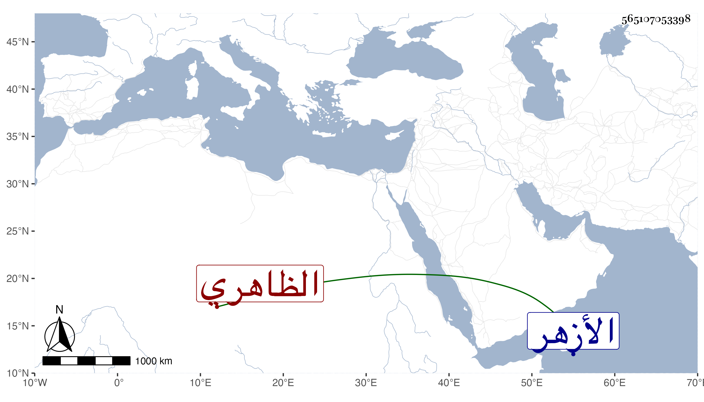

0902Sakhawi.DawLamic.ITO20230111-ara1.EIS1600.565107053398
Biography ID: 565107053398
180
أبو بكر بن قريش بن اسماعيل بن محمد بن قريش ابن عم الشرف موسى الظاهري . ولد سنة خمسين بالظاهرية ومات أبوه وهو طفل فنقله ابن عمه إلى الأزهر وحفظ القرآن والعمدة والمنهاج والشاطبية والألفية وعرض على المحلي والمناوي والوروري في آخرين ولازم زكريا والسنتاوي وغيرهما وسافر على الصر أيام شيخه إلا في زمن المحنة فإنه كان ممن رسم عليه حتى إنه مات ولده فلم يمكن من تجهيزه بل فتح حاصله وتعدى ضرره لغيره وضرب وهو ممن له همة ويشكر بين الجماعة ويذكر بتمول زائد .
